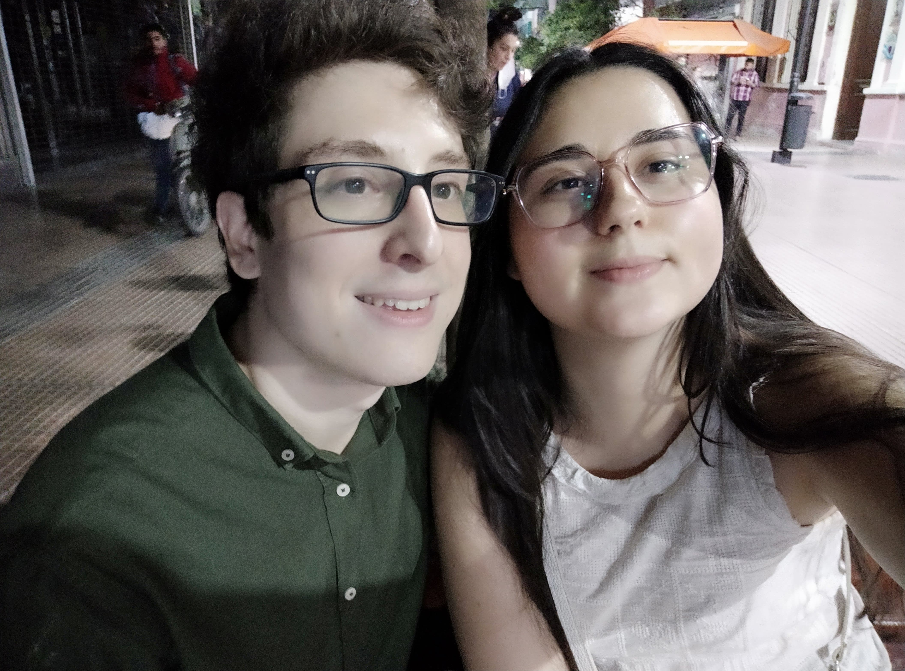
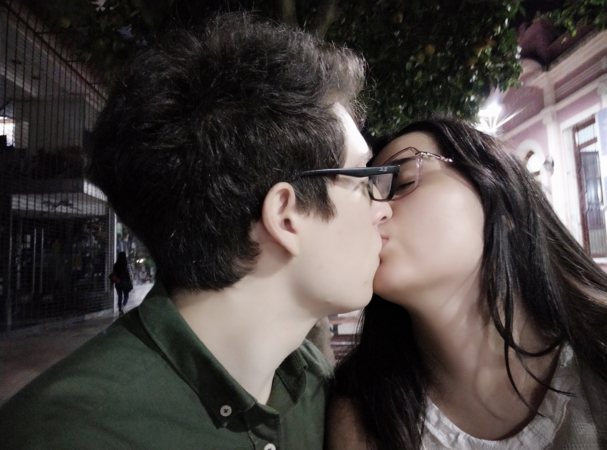

La primera foto tiene que ser esta. En donde salimos a ver juntos la última película de Doctor Strange, la cuál decidiste venir a verla conmigo a pesar de que ya la habías visto.
Para mi esta noche fue muy especial, porque no llevabamos saliendo hace mucho, pero yo ya podía sentir las chispas en el aire, incluso más cuando decidimos besarnos y sacarnos nuestra primera foto asi.
Sinceramente este fue un momento muy mágico, el cuál lo tengo plasmado en mi cabeza hasta el día de hoy.
Mi vida empezó a sonar como la canción de abajo cada vez que te besaba.